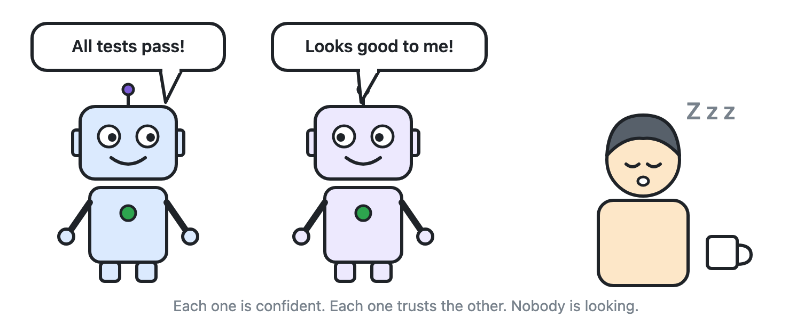

When humans built and operated all our software, we had an invisible safety net. Someone, somewhere, would look at a screen, frown, and say, "Wait—that doesn't look right."
Nobody had to engineer that safety net. It existed automatically because a human being was always in the room.
As more of the daily workflow fills with machines, that invisible net quietly disappears.
Three machines in a trench coat
Today, AI often plays all three roles in a project: it builds the tool, it inspects the tool, and it is the customer that uses the tool.
- The AI that builds it tells me it's ready, even if it would confuse a real person the moment they touched it.
- The AI that inspects it says all the quality checks passed.
- The AI that uses it tells me the job is finished, even when the real-world outcome is a mess.
Each machine is confident, each one trusts the other, and nobody is actually looking.

I felt a sharp version of this recently. I had a control panel with every icon in its proper place, and I asked an AI assistant to add one new tab. The new tab appeared, the automated check asked "Is the new tab there?", and the dashboard flashed a green light. Meanwhile, every single icon on the rest of the screen had quietly vanished. I only caught it because I happened to open the page myself.
Why machines have tunnel vision
Let me be fair to the machines first. They are much better than I am at the repetitive, exhausting parts of the job. They don't get tired on a Friday afternoon. They read every single line they are handed, and they keep going long after a human's eyes would glaze over.
Still, they have tunnel vision. They only see what fits inside the instructions we give them. If a real-world problem isn't mentioned in their rulebook, it doesn't exist to them. I am happy to hand over the brute-force checking, but there is one thing a machine cannot tell me: whether the box it ticked was the right box to care about.
Where the human job moves
The answer isn't to put a human back into every tiny step. That defeats the whole point of automation, and nobody misses reviewing code or spreadsheets line by line at two in the morning.
Instead, the human job moves to the two ends of the process—and to designing smart tripwires in the middle.
At the start, intent. Somebody has to decide what is worth doing and what "success" actually looks like for a real person. A machine cannot define that for itself. When an automated system orders a piece of work on its own, "the system asked for it" is not a business reason. A person still has to own the goal—and the bill.
In the middle, tripwires that outlive the moment. Every time I catch an automated mistake, I turn that lesson into a permanent safeguard that keeps working when I'm not watching: a test that verifies the customer actually got an email rather than just checking that a file was created, or a live status board that shows what is really happening. Writing the work is getting cheap. Knowing whether the work is actually right is the new premium skill.
Some work has no outcome you can check right away, like an agent tidying data structures in the background for hours. For that I'd use a confidence budget. The task starts with full confidence, and every operation nobody has looked at drains it a little. At zero, the workflow stops and asks. I'll come back to this in Part 7, because it is the cheapest manual override I know.
At the end, accountability. Somebody has to own the final outcome and decide who gets access, who can change what, and who is allowed to say "ship it." Automated assistants can do the legwork, but human beings still have to answer when a silent shortcut lets a client down. When that happens, "the AI said it was done" isn't an excuse any of us can give.

Have you caught an AI passing its own test while quietly breaking everything right next to it? Share your best story with me on LinkedIn.
Cheers,
Markus
No bug 🐛 too small, no syntax too weird 🔍 🧐 🔨 🦾